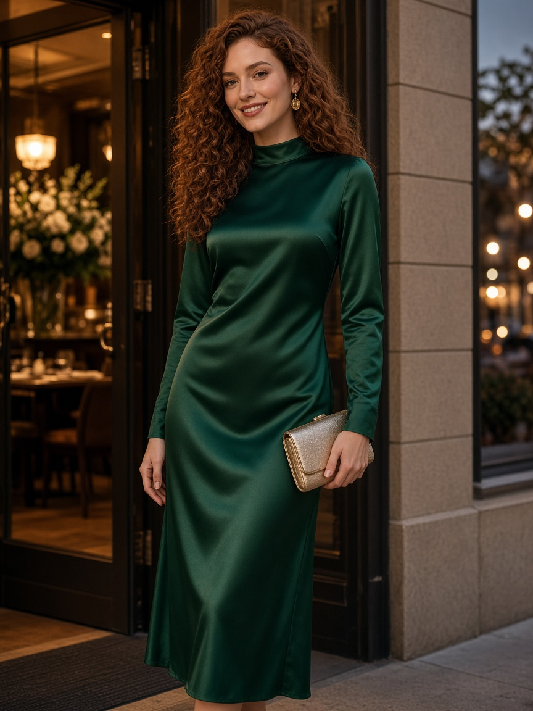
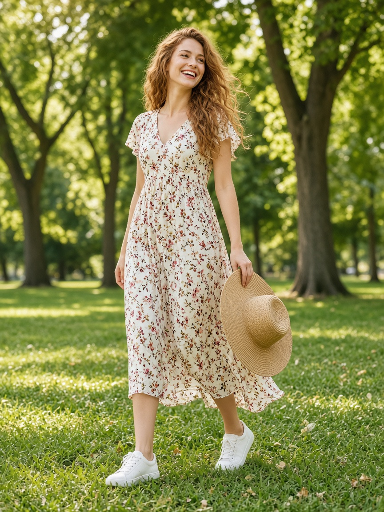

A closet
Tops, bottoms, dresses, outerwear, shoes, and accessories. Tag color, season, and formality.
A daily edit from your closet
Photograph the clothes you already own. Tag them. Ask for a complete look for the occasion and the weather. The closet stays on your iPhone or iPad.

The portraits are original generated images made for this app, the same ones used in the App Store screenshots. They are not photographs of real people, and they are not pictures of your clothes. Your closet is the one you photograph.

Tops, bottoms, dresses, outerwear, shoes, and accessories. Tag color, season, and formality.
A complete look for work, casual, a date, the weekend, or something formal. Wear this today logs it.
Hot, mild, cold, rain. Apple Weather is optional. If location is off, or you are offline, the manual choice is used.
What you wore stays on a calendar, so the same look is ranked lower for a few days.
No account. No tracking. No upload. Camera and Photos are used only to catalog clothes you choose to add. A copy goes to Photos only when you tap Save to Photos. Location is asked only if you turn on Apple Weather, and the place is not stored.
Suggestions sort the clothes you own. They are not a stylist, and not a shopping list.